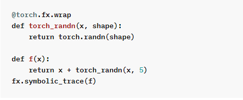
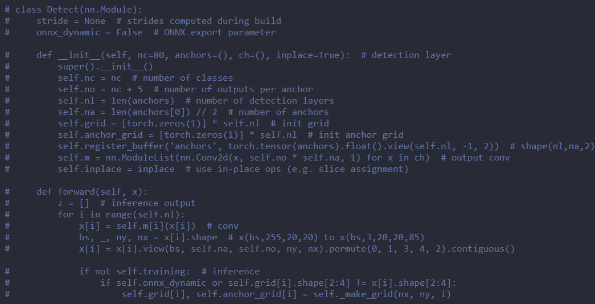
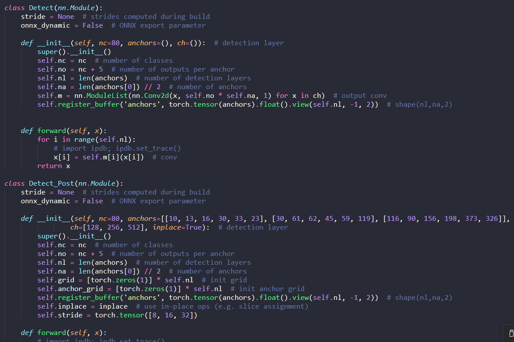

1. QAT使用说明
本文档主要介绍清微智能深度学习模型Finetune Lib的运行环境配置、工具的介绍、工具的使用方法以及工具的使用场景。
1.1. 简介
文件目录如下表：
目录 |
开源/封闭 |
说明 |
|---|---|---|
ts_qat_pytorch-2.0.x-py3-none-any.whl |
开源 |
通过pip install在python的安装包路径下形成ts_qat_pytorch的库文件， 包含Finetune时所依赖的全部文件（详见ts_qat_pytorch介绍） |
example/ |
开源 |
提供使用Knight-Finetune-Lib的一些demo |
1.2. 准备工作
1.2.1. 环境配置
1.2.1.1. 基础环境配置
默认用户在服务器上配置了显卡和CUDA以及python3的相关与训练模型有关的环境， 查看显卡和CUDA的命令为
nvidia-smi
然后需要安装torch==2.1.0,torchvsion==0.16.0具体安装版本如下：
pip install torch==2.1.0 torchvision==0.16.0
安装完成后需要验证pytorch是否能够在gpu上面正常运行，验证方式如下图：
图 cuda验证
如果是True的话就是pytorch能够在gpu上面正常运行，否则就需要检查服务器上显卡驱动和CUDA的版本是否安装正确。
1.2.1.2. 其他python环境的安装和配置
1.2.1.2.1. pip软件包的安装
确认python的安装环境中是否有安装pip，命令如下：
which pip
出现pip相应的安装路径，比如：miniconda3/envs/quant_tool/bin/pip，证明pip已安装。
如果pip并未安装，在终端里执行
wget https://repo.anaconda.com/miniconda/Miniconda3-latest-Linux-x86_64.sh
然后执行
bash Miniconda3-latest-Linux-x86_64.sh
自动安装此软件包内含pip安装包，无需另外安装。
1.2.1.2.2. 其他Python软件包的安装以及环境变量的配置
pip install ts_qat_pytorch-2.0.x-py3-none-any.whl
需要用户在联网的状态自动安装
如用户已安装上述依赖包，安装会自动跳过，直接安装 ts_qat_pytorch 软件包，如使用anaconda的环境安装后会在anaconda3/envs/${虚拟环境名称}
/lib/python3.8/site-packages/ts_qat_pytorch里面，如使用其他python的环境请用户自行在python的安装路径中lib/python3.8/site-packages/ts_qat_pytorch中寻找。
1.3. Knight-Finetune-Lib介绍
1.3.1. 名词解释
Finetune：即微调，这个名词是从模型训练的领域中借鉴过来的，就是从一个训练好的模型中通过减小学习率进行进一步的调整，使模型精度有进一步的提升。在这里的Finetune有的地方也称作量化感知训练，即QAT(Quantization Aware Training)。
1.3.2. Knight-Finetune-Lib的应用场景
在使用量化工具进行模型量化时，精度不满足实际的需求，就需要使用Knight-Finetune-Lib进行Finetune训练，以达到实际的需求。
1.4. Knight-Finetune-Lib使用方法
1.4.1. 整体工作流程
用户提供浮点模型和训练数据，使用Knight-Finetune-Lib进行Finetune训练，在训练过程中插入量化和反量化的节点，得到带有QDQ的ONNX模型后，用ONNX量化工具进行模型量化：
使用QDQ的ONNX模型进行ONNX的量化，具体流程如下图：
图 Knight-Finetune-Lib训练流程图
1.4.2. ts_qat_pytorch介绍
目录 |
说明 |
|---|---|
nn/ |
将浮点模型中浮点模块转化成量化模块 |
fake_quantize/ |
Knight-Finetune-Lib中模拟量化的实现 |
tools/ |
Knight-Finetune-Lib中对浮点模型的相关处理 |
utils/ |
调用Knight-Fi netune-Lib时需要的注册器、记录log信息和其他工具 |
custom_quantizer/ |
模型 量化时相关节点替换，同时也支持自定义的量化算法 |
onnx/ |
将插入fake节点的 pytorch的模型转成带有QDQ的ONNX，便于查看插入的 fake节点的位置，注意该模型不能进行ONNX的推理。 |
fuser_ method_mappings.py |
conv、deconv、BN、linear的融合 |
observer/ |
量化使用的观测器 |
quantization/ |
和Finetune相关的一些依赖的函数文件 |
prep are_by_platform.py |
根据不同的后端指定不同的量化方案 |
scheme.py |
描述量化策略 |
custom _symbolic_opset.py |
为torch.quantize_function 注册符号算子 |
convert_export.py |
导出带有QDQ节点的ONNX模型的入口函数 |
1.4.3. Finetune自定义模型
1.4.3.1. Knight-Finetune-Lib的API接口
API接口 |
接口说明 |
输入参数说明 |
|---|---|---|
prepare_by_platform |
根据不同 的后端类型 ，向传入的 model插入不 同的伪量化 节点，为后 续校准和伪 量化做准备 |
model:原始模型定义 backend:指定finetune后端，现阶段 支持TSQAT、Experimental的后端。 prepare _custom_config_dict:自定义配置信 息，具体如何配置详见代码中的注释 custo m_tracer：自定义tracer，可以缺省 |
enable_calibration |
使能校准， 有益于下一 步的伪量化 |
mode l：插入fake_quantize节点后的模型 |
enable_quantization |
使能伪量化 |
mode l：插入fake_quantize节点后的模型 |
enable_calibra tion_woquantization |
校准过 程中不使用 伪量化节点 |
mode l：插入fake_quantize节点后的模型 qua ntizer_type:伪量化对象类型，取值 “weight_fake_quant” /“act_fake_quant”/“fake_quant”， 分别指定只校准权重、只校准激活、 同时校准权重和激活；默认第三种； |
enable_calib ration_quantization |
校准 过程中使用 伪量化节点 |
mode l：插入fake_quantize节点后的模型 |
save_checkpoint |
保 存模型文件 |
model: QAT的模型 file_path:去除伪节 点的模型保存路径（含保存文件名） file_path_json:量化参数js on文件的保存路径（含保存文件名） |
1.4.3.2. 使用步骤介绍
以下以resnet18为例，来看一下如何量化自己的模型，其中与模型训练相关的部分只需和浮点模型训练一致即可：
from ts_qat_pytorch.prepare_by_platform import prepare_by_platform, BackendType
from ts_qat_pytorch.utils.state import enable_calibration, enable_quantization, enable_calibration_woquantization, enable_calibration_quantization
# 首先，创建模型并加载预训练权重
model = models.__dict__["resnet18"](pretrained=True)
model.train()
# 然后，我们使用torch.fx来跟踪原始的模型，根据不同的后端插入不同的伪量化的节点，现阶段支持TSQAT、Experimental的后端
model = prepare_by_platform(model, BackendType.TSQAT)
# 在训练之前，为了使QAT在训练的scale更加稳定，我们推荐先使用一些校准数据进行scale的校准，然后再进行QAT的训练
model.eval()
enable_calibration(model)
# calibration loop
for i, batch in enumerate(data):
# 做前向过程
...
model.train()
enable_quantization(model)
# 训练过程
for i, batch in enumerate(data):
#做前向过程
...
#做反向过程和梯度优化
...
1.4.4. Finetune Demo模型
此处Demo模型主要以mobilenet_v3_small图像分类网络为例，以下分别介绍finetune该类demo模型的相关参数及操作步骤，了解更多细节请结合本文档说明及示例源码。
1.4.4.1. 参数说明
参数 |
说明 |
默认值* |
必选 /可选 |
参 数类型 |
|---|---|---|---|---|
-h 或是 –help |
显示帮 助信息并退出 |
无 |
可选 |
无 |
–data |
imagene t数据集的路径 |
无 |
必选 |
无 |
–model-zoo |
指定mo del-zoo的名称 |
to rchvision |
可选 |
str |
-a 或是 –arch |
模 型结构的名称 |
resnet18 |
可选 |
str |
–teacher-arch |
蒸馏时teac her模型结构名 |
resnet101 |
可选 |
str |
-nc 或是 –num-classes |
模型分 类的类别数量 |
1000 |
可选 |
int |
-j 或是 –workers |
数据加载 时开启的线程 |
4 |
可选 |
int |
–epochs |
运行的 epoch的总个数 |
90 |
可选 |
int |
–start-epoch |
手动指定从 哪个epoch开始 |
0 |
可选 |
int |
-b或是 –batch-size |
min i-batch的大小 |
256 |
可选 |
int |
–lr或是 –learning-rate |
学习率 |
0.1 |
可选 |
float |
–momentum |
动量 |
0.9 |
可选 |
float |
–wd或是 –weight-decay |
权重衰减 |
1e-4 |
可选 |
float |
-p 或是 –print-freq |
每隔多 少迭代次数屏 幕中打印一次 |
100 |
可选 |
int |
–resume |
最近保存 的模型的路径 |
‘ ’ |
可选 |
str |
-e或是–evaluate |
只在验 证集进行测试 |
无 |
可选 |
st ore_true |
–pretrained |
使能使 用预训练模型 |
无 |
可选 |
st ore_true |
–world-size |
分布式训 练节点的数量 |
-1 |
可选 |
int |
–rank |
分布式训练节 点进程的编号 |
-1 |
可选 |
int |
–dist-url |
设置用于分 布式训练的url |
tcp:// 224.66.41 .62:23456 |
可选 |
str |
–dist-backend |
分布式的后端 |
nccl |
可选 |
str |
–seed |
用于初始化 训练的种子点 |
None |
可选 |
int |
–gpu |
指 定训练需要使 用的gpu的id号 ,如不指定使用 所有可用的gpu |
None |
可选 |
int |
–multiproces sing-distributed |
使能多进 程分布式训练 |
无 |
可选 |
st ore_true |
–model-path |
指定官 方的模型路径 |
None |
可选 |
str |
–teacher-path |
指定teac her的模型路径 |
None |
可选 |
str |
–backend |
量化的后端： TSQ AT、Experimen tal共有两种可 选，具体参见 下面的注解。 |
TSQAT |
可选 |
str |
–optim |
训练 需要的梯度优 化算法：目前 支持sgd/adam |
sgd |
可选 |
str |
–not-qat |
不进行qat |
无 |
可选 |
st ore_true |
l或是–log-level |
日志的级别 0: debug 1: info 2: warning 3: error |
1 |
可选 |
int |
–profile |
输 出每一层的精 度对比，便于 查找精度问题 |
无 |
可选 |
st ore_true |
–distill-method |
指 定蒸馏的方法 |
None |
可选 |
str |
–distill-alpha |
蒸 馏的调节系数 |
0.95 |
可选 |
float |
–temperature |
蒸馏的温度 |
6 |
可选 |
float |
–amp |
使用torch .cuda.amp进行 混合精度训练 |
无 |
可选 |
st ore_true |
–onnx-batch |
导出 QDQ的ONNX模型 的batch-size |
1 |
可选 |
int |
–opset-version |
导出QD Q的ONNX模型的 opset-version |
18 |
可选 |
int |
Note
1.如果要从预训练的模型进行finetune训练，需要–pretrained、–model-path、–resume三个参数任选其一，否则这三个参数就是可选的。
2.–lr、–optim、–wd这三个参数不要任意指定，要根据实际的训练策略来决定，比如，对于imagenet的mobilenet_v3_small和yolov5s网络我们推荐操作步骤展示的参数配置。
3.–world-size、–rank、–dist-url、–dist-backend、–multiprocessing-distributed这四个参数选项是与分布式训练相关的参数，具体如何使用可以参见https://github.com/pytorch/examples/tree/main/imagenet。
4.对于backend的2种不同的后端的具体使用场景的几点说明：
backend |
使用场景 |
应用范围 |
|---|---|---|
TSQAT |
使用ONNX量化工 具进行导入量化参数的 方式进行模型量化使用 |
用于ONNX量 化工具导入量化参数 |
Experimental |
实验性的后 端，不推荐用户使用。 |
进行实验性的验证 |
1.4.4.2. Demo操作步骤
以下的示例只针对单gpu训练。
步骤一：测试浮点模型
将example文件夹放到自定义目录下，直接执行以下命令：
运行结果：
* Acc@1 64.350 Acc@5 89.917
# 测试 yolov5_v3.0
cd example/yolov5_v3.0_example
python test.py –weights yolov5s.pt –data data/coco.yaml –device 1
运行结果：
Scanning labels /data/public_data/data_coco/labels/val2017.cache (4952 found, 0 missing, 48 empty, 0 duplicate, for 5000 images): 5000it [00:00, 11245.95it/s]
Class Images Targets P R mAP@.5 mAP@.5:.95: 100%|█████████████████████████████| 157/157 [01:14<00:00, 2.11it/s]
all 5e+03 3.63e+04 0.36 0.627 0.538 0.338
步骤二：通过Knight-Finetune-Lib获得更优的浮点模型
# Finetune mobilenet_v3_small
python example/imagenet_example/main.py -a mobilenet_v3_small -b 128 --data example/imagenet_example/data/imagenet/images –model-path example/imagenet_example/float_model/ mobilenet_v3_small_120.pth --gpu 0 -j 10 --lr 1e-4 --optim adam --wd 1e-5 --epochs 10 -nc 120
运行结果：
* Acc@1 62.667 Acc@5 89.433
# Finetune yolov5_v3.0
cd example/yolov5_v3.0_example
CUDA_VISIBLE_DEVICES='1,2,3,4,5,6,7' python train_qat.py --data data/coco.yaml --device 1,2,3,4,5,6,7 --epochs 10 --batch-size 49 --workers 6 --quantize --output_dir checkpoint_qat --hyp data/hyp.qat.yaml
运行结果：
Class Images Targets P R mAP@.5 mAP@.5:.95: 100%|█████████████████████████████| 103/103 [02:16<00:00, 1.32s/it]
all 5e+03 3.63e+04 0.356 0.608 0.519 0.302
Note
1.由于训练时做了数据的重新排布，所以现在只训练一个epoch时，得到的Acc@1和Acc@5和上面给出的结果有一些差别，这个差别是合理的。 2.如果采用多卡训练时，产生的模型的state_dict会产生’module.’的前缀，如果后续使用量化工具量化时，需要做处理，方式如下：
state_dict = checkpoint['state_dict']
model_dict = model.state_dict()
if 'module.' in list(state_dict.keys())[0] and 'module.' not in list(model_dict.keys())[0]:
for k in list(state_dict.keys()):
state_dict[k[7:]] = state_dict.pop(k)
Note
1.关于训练epoch的数量，对于imagenet的分类的网络可以先训练一个epoch，看是否满足需求，如果不满足需求，需要继续finetune，最多不超过10个epochs。 2.关于上述demo模型屏幕打印信息的一些说明：
Epoch[0]表示第0个epoch；[0/2503]，0表示第0个batch，2503表示一共2503个batch；Time 12.614(12.614)，12.614表示一个batch的执行时间，括号内的是平均时间；
Data 6.371(6.371)，6.371表示一个batch的数据的加载时间，括号内的是平均时间；Loss 1.1625e+00(1.1625e+00)， 1.1625e+00表示一个batch的loss值，括号内的是平均loss值，Acc@1 71.48(71.48)，71.28表示一个batch的top1精度， 括号内的是平均top1精度；
Acc@5 89.26(89.26)，89.26表示一个batch的top5精度，括号内的是平均top5精度。
1.4.4.3. 关于QAT文件的相关说明
模型保存方式
参考 example/imagenet_example/main.py 中的 save_checkpoint 函数，该函数会将模型自动保存；convert_export函数，该函数会自动把带量化参数的QDQ的ONNX模型自动保存。import该函数如下：
from ts_qat_pytorch.utils.utils import save_checkpoint
from ts_qat_pytorch.convert_export import convert_export
1.4.4.3.1. 保存文件的相关说明
save_checkpoint函数会保存两类文件：带伪节点的QAT训练模型权重和带有qdq节点的ONNX浮点模型。
带伪节点的QAT训练模型：用来继续进行QAT训练；
convert_export函数生成带QDQ(Quantize-DQuantize)节点的ONNX模型，可使用ONNX量化工具对其进行量化。
对于imagenet_example来说，会在 example/imagenet_example/checkpoint 路径下生成如下表所列文件；
文件名 |
说明 |
|---|---|
模型名_checkpoint.pth |
当前epoch生成的模型文件 |
模型名_model_best.pth |
已训练epoch中精度最高的模型文件 |
模型 名_onnx_quantization.onnx |
当前epoch生成的QDQ的ONNX模型文件 |
模型名_ bestonnx_quantization.onnx |
已 训练epoch中精度最高的QDQ的ONNX模型文件 |
1.5. Knight-Finetune-Lib适用的算子规格表
序 号 |
Pytorch算子名称 |
是 否支持 |
|---|---|---|
1 |
torch.nn.Conv2d torch.nn.Conv1d |
支持 |
2 |
torch.nn.ConvTranspose2d torch.nn.ConvTranspose1d |
支持 |
3 |
torch.nn.Linear torch.nn.functional.linear |
支持 |
4 |
torch.nn.MaxPool2d torch.nn.functional.max_pool2d torch.nn.MaxPool1d torch.nn.functional.max_pool1d |
支持 |
5 |
torch.nn.AdaptiveAvgPool2d torch.nn.functional.adaptive_avg_pool2d torch.nn.AdaptiveAvgPool1d torch.nn.functional.adaptive_avg_pool1d |
支持 |
6 |
torch.nn.BatchNorm2d torch.nn.BatchNorm1d |
支持 |
7 |
torch.nn.ReLU torch.nn.functional.relu torch.relu |
支持 |
8 |
torch.nn.PReLU torch.nn.functional.prelu torch.prelu |
支持 |
9 |
torch.nn.Upsample torch.nn.functional.interpolate |
支持 |
10 |
torch.nn.AvgPool2d torch.nn.functional.avg_pool2d torch.nn.AvgPool1d torch.nn.functional.avg_pool1d |
支持 |
11 |
torch.nn.functional.LeakyReLU torch.nn.functional.leaky_relu |
支持 |
12 |
torch.nn.Tanh torch.nn.functional.tanh torch.tanh |
支持 |
13 |
torch.nn.Sigmoid torch.nn.functional.sigmoid torch.sigmoid |
支持 |
14 |
torch.nn.ReLU6 torch.nn.functional.relu6 |
支持 |
15 |
torch.nn.ELU torch.nn.functional.elu |
支持 |
16 |
torch.nn.SELU torch.nn.functional.selu torch.selu |
支持 |
17 |
torch.flatten(必须指定dims) |
支持 |
18 |
torch.nn.Softmax torch.nn.functional.softmax torch.softmax |
支持 |
19 |
torch.nn.RNN |
不支持 |
20 |
torch.nn.LSTM |
不支持 |
21 |
torch.nn.GRU |
不支持 |
22 |
torch.cat |
支持 |
23 |
torch.split |
支持 |
24 |
torch.Tensor.repeat |
支持 |
25 |
torch.add, operator.add |
支持 |
26 |
torch.mul, operator.mul |
支持 |
27 |
torch.abs |
支持 |
28 |
torch.sqrt |
支持 |
29 |
torch.exp |
支持 |
30 |
torch.pow |
支持 |
31 |
torch.log |
支持 |
32 |
torch.sin |
支持 |
33 |
torch.cos |
支持 |
34 |
[:, :, :, :] |
支持 |
35 |
torch.transpose torch.Tensor.transpose |
支持 |
36 |
torch.Tensor.view |
支持 |
37 |
torch.squeeze torch.Tensor.squeeze |
支持 |
38 |
torch.unsqueeze torch.Tensor.unsqueeze |
支持 |
39 |
torch.nn.GLU torch.nn.functional.glu |
支持 |
40 |
torch.stack |
支持 |
41 |
torch.chunk |
支持 |
42 |
torch.mean |
支持 |
43 |
torch.sub, operator.sub |
支持 |
44 |
torch.min |
支持 |
45 |
torch.max |
支持 |
46 |
torch.nn.PixelShuffle torch.nn.functional.pixel_shuffle |
支持 |
47 |
torch.nn.LayerNorm torch.nn.functional.layer_norm |
支持 |
48 |
torch.nn.Hardswish torch.nn.functional.hardswish |
支持 |
49 |
torch.nn.Hardsigmoid torch.nn.functional.hardsigmoid |
支持 |
50 |
torch.clamp |
支持 |
51 |
torch.argmax torch.Tensor.argmax |
支持 |
52 |
torch.nn.Embedding |
支持 |
53 |
torch.nn.SiLU torch.nn.functional.silu |
支持 |
54 |
torchvision.ops.RoIPool |
支持 |
55 |
torch.matmul |
支持 |
56 |
torch.nn.GELU torch.nn.functional.gelu |
支持 |
57 |
torch.nn.PixelUnshuffle torch.nn.functional.pixel_unshuffle |
支持 |
58 |
torch.tile torch.Tensor.tile |
支持 |
59 |
torch.Tensor.to |
支持 |
60 |
torch.permute torch.Tensor.permute |
支持 |
61 |
torch.reshape torch.Tensor.reshape |
支持 |
62 |
torch.roll |
支持 |
Note
对于LSTM、GRU、RNN QAT不插入fake节点，因此对于循环结构的网络QAT没有任何效果。**
1.6. FAQ
【问题1】动态控制流的trace问题
【问题解析】因为trace模型是用torch.fx跟踪的，现在torch.fx无法trace到动态控制流
【验证过程】
【问题2】静态控制流的trace问题
【问题解析】因为trace模型是用torch.fx跟踪的，现在torch.fx无法直接trace到静态控制流，但是可以修改
【验证过程】
将原始的MyModule分成上图的两个模型，就可以trace到
【问题3】Tensor构造函数（比如：torch.zeros, torch.ones,torch.rand,torch.randn,torch.sparse_coo_tensor）和assert无法进行跟踪
- 【解决方法】
1.对于确定性的Tensor构造函数（比如zeros,ones）可以使用torch.ones_like，torch.zeros_like来代替这样就可以被跟踪到；
2.对于不确定性的Tensor构造函数（比如rand,randn）可以用torch.fx.wrap对torch.randn进行装饰，例如：
 3.forward函数中删除assert；
【问题4】对于图像领域的检测网络，需要首先做前后处理的剥离，因为前处理和后处理往往无法trace
- 【解决方法】
- 将网络部分单独提取出来，只trace网络的部分，qat的部分也只针对网络部分进行，以业内使用最多的yolov5为例：
原始网络为
 改成
 分别进行跟踪
【问题5】自定义CustomTracer（比如使用leaf_module）
【解决方法】